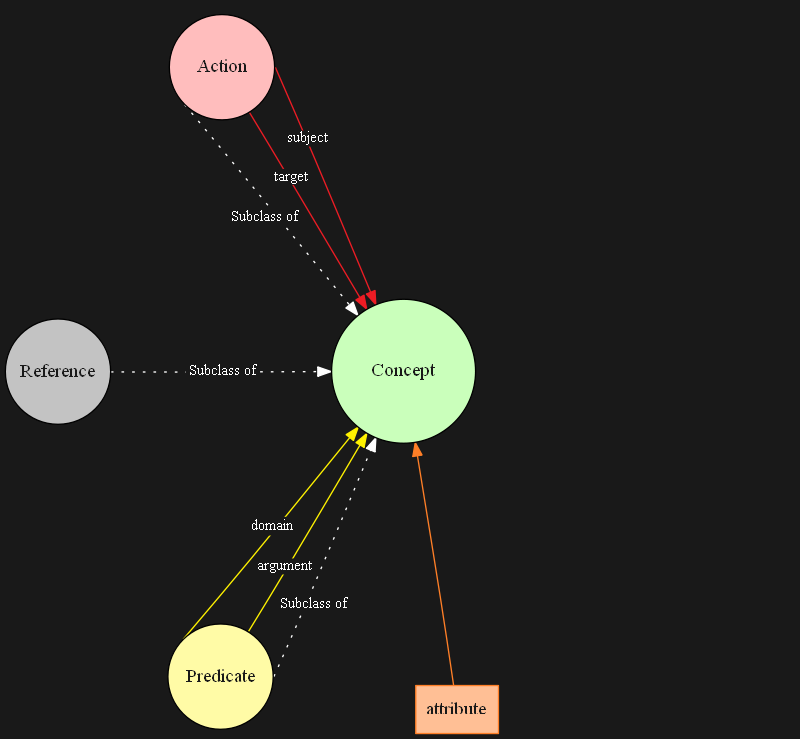
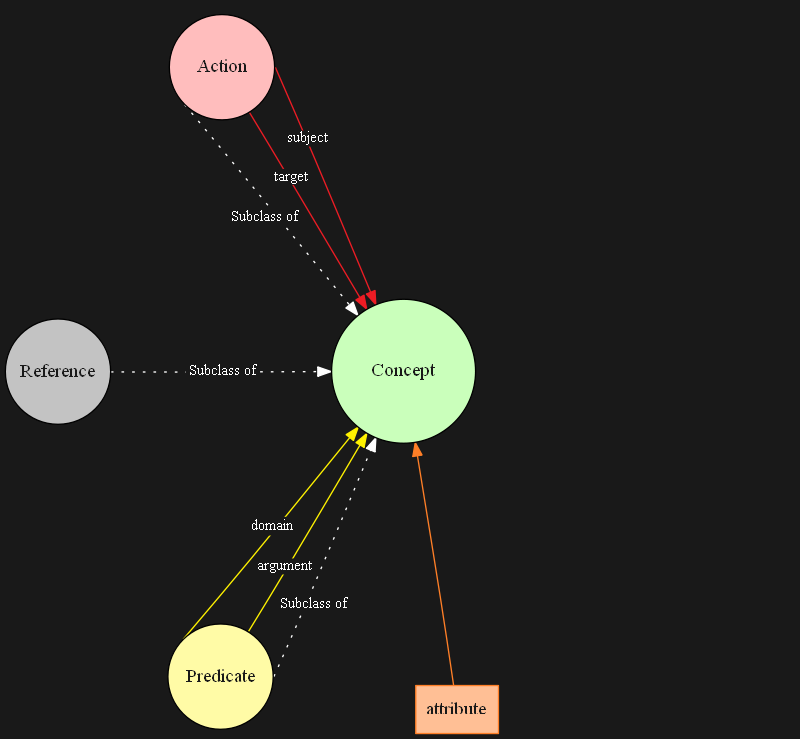
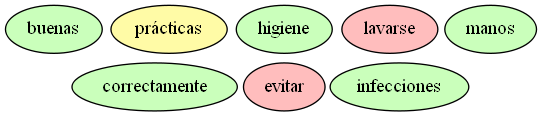

Universidad de La Habana
Facultad de Matemática y Computación
Generación Automática de Ontologías
Autor: José Ariel Romero Costa
Tutor: MSc. Juan Pablo Consuegra Ayala
Presentado en opción al título de
Licenciado en Ciencia de la Computación
Introducción
¿Qué es el conocimiento?
Hechos o información adquiridos por una persona a través de:
- la experiencia
- la educación
- la comprensión teórica
- la comprensión práctica
Conocimiento por medio de la lectura
- Libros
- Artículos
- Reportes
- Noticias
Señales de agotamiento mental
- Desmotivación
- Problemas para conciliar el sueño
- Fatiga y cansancio general
- Mareos y dolores de cabeza
- Irritabilidad
¿Qué tal si alguien aprendiera por mí y me ayuda?
- Amigo
- Equipo de cómputo
¿Cómo representar el conocimiento en un equipo de cómputo?
Ontologías:
- conceptos
- relaciones
¿Para qué sirven las ontologías?
- Crean entendimiento compartido
- Permiten el reuso del conocimiento
- Facilitan la recuperación, integración e interoperatividad entre fuentes de conocimiento heterogéneas
- Posibilitan el descubrimiento implícito de conocimiento
Problemática
Representar un corpus de documentos anotados como base de conocimiento, por medio de una ontología.
Objetivo general:
- Definir un diseño de ontología de propósito general que sea capaz de representar el conocimiento descrito en uno o más corpus anotados.
Objetivos específicos:
- Estudiar los esquemas de anotación y corpus.
- Definir un esquema conceptual de anotación.
- Definir un formato de anotación de archivos para el esquema conceptual.
- Diseñar una propuesta de ontología donde se pueda representar un corpus de documentos escritos en lenguaje natural.
- Implementar un algoritmo computacional para representar un corpus anotado como grafo de conocimiento.
- Implementar un marco experimental.
Modelo de Anotación
Esquema de Anotación
 



Anotación automática de documentos
eHealth-KD Challenge: IberLEF 2019, IberLEF 2020
- Anotación de textos médicos del idioma español
- Basada en el mismo modelo de anotación
Propuesta de Solución
Modelo Ontológico
Ontología O = (C, R, A, Top)
- C: conceptos
- R: relaciones
- A: axiomas
- Top: concepto con más alto nivel en la jerarquía
Clases en la ontología
- Entidad simple
- Entidad con atributo
- Entidad compuesta
Relaciones en la ontología
Semántica:
- subject
- target
- domain
- argument
- in-time
- in-place
- in-context
Permiten descubrir conocimiento:
- is-a
- part-of
- same-as
- has-property
- causes
- entails
Orden Topológico
-
Texto
» Protagonistas: conceptos del corpus anotado.
» Resultado: instancias de entidad simple. -
Atributos
» Protagonistas: conceptos que son modificados por atributos.
» Resultado: instancias de entidad con atributo. -
Relaciones de acción, predicado y contextualización
» Protagonistas: entidades correspondientes a los conceptos implicados en estas relaciones.
» Resultado: instancias de entidad compuesta. -
Relaciones taxonómicas y de causa e implicación
» Protagonistas: entidades correspondientes a los conceptos implicados en estas relaciones.
Ejemplo
“Las buenas prácticas de higiene, incluyendo lavarse las manos correctamente, pueden evitar infecciones.”
# Keyphrases
T1 Concept 4 10 buenas
T2 Predicate 11 20 prácticas
T3 Concept 24 31 higiene
T4 Action 44 51 lavarse
T5 Concept 56 61 manos
T6 Concept 62 75 correctamente
T7 Action 84 90 evitar
T8 Concept 91 102 infecciones
# Relations
R1 in-context Arg1:T2 Arg2:T1
R2 domain Arg1:T2 Arg2:T3
R3 causes Arg1:T2 Arg2:T7
R4 is-a Arg1:T4 Arg2:T2
R5 target Arg1:T4 Arg2:T5
R6 in-context Arg1:T4 Arg2:T6
R7 target Arg1:T7 Arg2:T8
# Attributes
A1 Uncertain T7
1. Texto
» Protagonistas: conceptos del corpus anotado.
» Resultado: instancias de entidad simple.
T1 Concept 4 10 buenas
T2 Predicate 11 20 prácticas
T3 Concept 24 31 higiene
T4 Action 44 51 lavarse
T5 Concept 56 61 manos
T6 Concept 62 75 correctamente
T7 Action 84 90 evitar
T8 Concept 91 102 infecciones

2. Atributos
» Protagonistas: conceptos que son modificados por atributos.
» Resultado: instancias de entidad con atributo.
A1 Uncertain T7
T7 Action 84 90 evitar
3. Relaciones de acción, predicado y contextualización
» Protagonistas: entidades correspondientes a los conceptos implicados en estas relaciones.
» Resultado: instancias de entidad compuesta.
R1 in-context Arg1:T2 Arg2:T1
R2 domain Arg1:T2 Arg2:T3
T1 Concept 4 10 buenas
T2 Predicate 11 20 prácticas
T3 Concept 24 31 higiene
3. Relaciones de acción, predicado y contextualización
» Protagonistas: entidades correspondientes a los conceptos implicados en estas relaciones.
» Resultado: instancias de entidad compuesta.
R5 target Arg1:T4 Arg2:T5
R6 in-context Arg1:T4 Arg2:T6
T4 Action 44 51 lavarse
T5 Concept 56 61 manos
T6 Concept 62 75 correctamente

3. Relaciones de acción, predicado y contextualización
» Protagonistas: entidades correspondientes a los conceptos implicados en estas relaciones.
» Resultado: instancias de entidad compuesta.
R7 target Arg1:T7 Arg2:T8
T7 Action 84 90 evitar
T8 Concept 91 102 infecciones
4. Relaciones taxonómicas y de causa e implicación
» Protagonistas: entidades correspondientes a los conceptos implicados en estas relaciones.
R3 causes Arg1:T2 Arg2:T7
T2 Predicate 11 20 prácticas
T7 Action 84 90 evitar
4. Relaciones taxonómicas y de causa e implicación
» Protagonistas: entidades correspondientes a los conceptos implicados en estas relaciones.
R4 is-a Arg1:T4 Arg2:T2
T2 Predicate 11 20 prácticas
T4 Action 44 51 lavarse
Resultados
Descubrimiento implícito de conocimiento
-
Documento cirugía.ann:
«cirugía de corazón is-a operación» -
Documento hígado graso.ann:
«operación is-a procedimiento médico» -
Descubrimiento:
«cirugía de corazón is-a procedimiento médico»
Resultados de la evaluación basada en datos
| % de división | 70 | 75 | 80 | 85 | 90 | 95 |
|---|---|---|---|---|---|---|
| oraciones | 959 | 959 | 959 | 959 | 959 | 959 |
| oraciones de entrenamiento | 671 | 719 | 767 | 815 | 863 | 911 |
| oraciones de verificación | 288 | 240 | 192 | 144 | 96 | 48 |
| % de división | 70 | 75 | 80 | 85 | 90 | 95 |
|---|---|---|---|---|---|---|
| entidades en el corpus | 3,725 | 3,938 | 4,135 | 4,345 | 4,544 | 4,739 |
| entidades de verificación | 1,888 | 1,621 | 1,353 | 1,058 | 746 | 405 |
| coincidencia de entidades | 678 | 623 | 554 | 468 | 355 | 209 |
| % de coincidencia de entidades | 35.91 | 38.43 | 40.95 | 44.23 | 47.59 | 51.6 |
| nuevas entidades | 1,210 | 998 | 799 | 590 | 391 | 196 |
| % de nuevas entidades | 64.09 | 61.57 | 59.05 | 55.77 | 52.41 | 48.4 |
| % de división | 70 | 75 | 80 | 85 | 90 | 95 |
|---|---|---|---|---|---|---|
| relaciones en el corpus | 6,139 | 6,560 | 6,965 | 7,390 | 7,802 | 8,213 |
| relaciones de verificación | 2,728 | 2,283 | 1,845 | 1,390 | 932 | 469 |
| coincidencia de relaciones | 244 | 220 | 187 | 156 | 111 | 59 |
| % de coincidencia de relaciones | 8.94 | 9.64 | 10.14 | 11.22 | 11.91 | 12.58 |
| nuevas relaciones por nuevas entidades | 2,416 | 2,003 | 1,609 | 1,195 | 795 | 397 |
| % de nuevas relaciones por nuevas entidades | 88.56 | 87.74 | 87.21 | 85.97 | 85.3 | 84.65 |
| nuevas relaciones en entidades existentes | 68 | 60 | 49 | 39 | 26 | 13 |
| % de nuevas relaciones en entidades existentes | 2.5 | 2.62 | 2.65 | 2.81 | 2.79 | 2.77 |
| % de coincidencia de relaciones válidas | 78.21 | 78.57 | 79.24 | 80 | 81.02 | 81.94 |
Palabras con más relaciones en la base de conocimiento
- tratamiento
- persona
- cuerpo
- problema
- médico
- sangre
- síntoma
- niño
- tener
- usar
- dolor
- riesgo
- utilizar
- ayudar
- causar
- dañar
Conclusiones
Contribuciones fundamentales de la investigación:
- La definición de un modelo de anotación de propósito general.
- La definición de un formato de escritura de archivos para el modelo de anotación.
- El diseño de una propuesta de ontología para representar el conocimiento de un corpus de documentos escritos en lenguaje natural.
- La implementación de un algoritmo computacional para representar un corpus anotado como grafo de conocimiento.
Otros aspectos relevantes:
- El desarrollo de una base de conocimiento de dominio médico.
- El descubrimiento de conocimiento implícito en la base de conocimiento creada.
- La ventaja del equipo de cómputo sobre el humano.
- El corpus sienta las bases para el desarrollo de nuevos sistemas y la continuación de la investigación.
Recomendaciones
- Anotar corpus de otros dominios y construir su respectiva base de conocimiento.
- Comprobar la efectividad con otras métricas.
- Resolver las correferencias.
- Crear una aplicación para computadoras, móviles y/o páginas web.
Repositorio
https://github.com/jromero132/bachelor_thesis/
Cada uno de los recursos usados se encuentran en:
-
Documento de tesis:
https://github.com/jromero132/bachelor_thesis_paper/ -
Presentación:
https://github.com/jromero132/bachelor_thesis_presentation/ -
Implementación:
https://github.com/jromero132/bachelor_thesis_code/